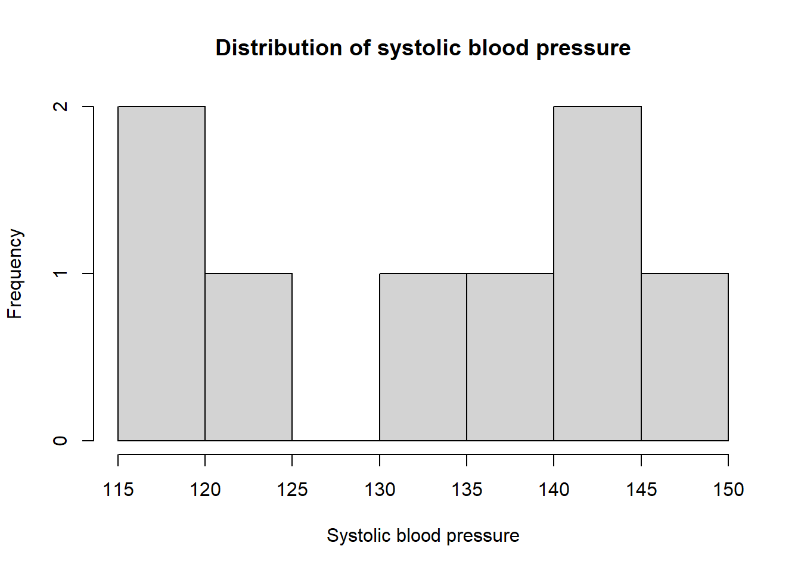
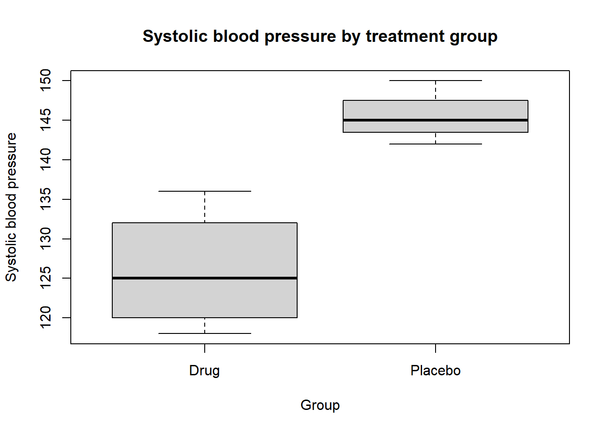
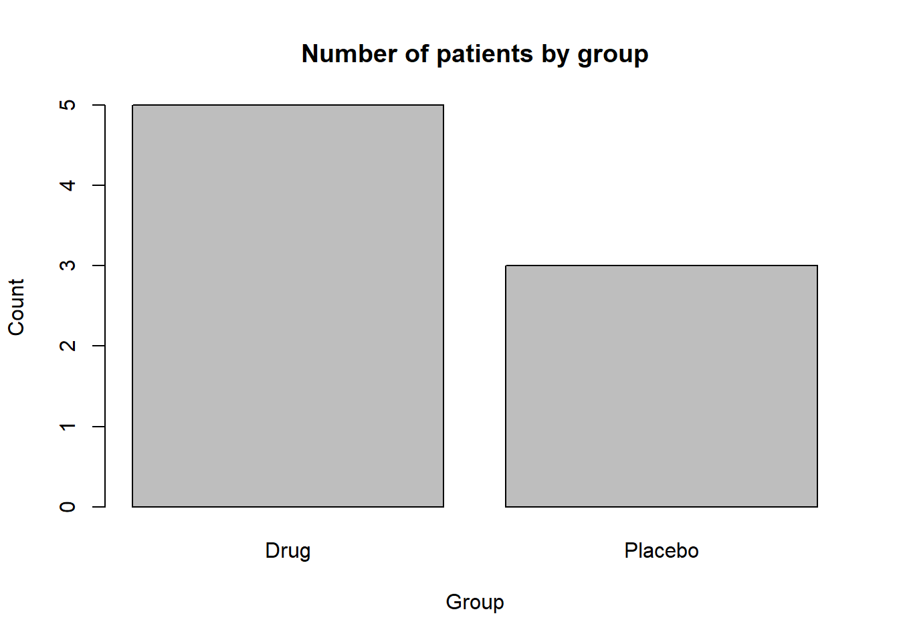

age <- 45
age[1] 45age_in_10_years <- age + 10
age_in_10_years[1] 55이번 장의 핵심 질문은 다음과 같다.
왜 의학·생명과학 연구에서 바이오통계가 필수적인가?
의생명과학과 의학 연구는 대부분 데이터에서 출발한다. 환자의 혈압, 혈당, 생존 기간, 유전자 발현량, 치료 반응률, 부작용 발생 여부, 검사 결과, 질병 발생률과 같은 정보는 모두 데이터이다. 그러나 데이터가 있다고 해서 자동으로 과학적 결론이 얻어지는 것은 아니다.
바이오통계는 이러한 데이터를 단순히 계산하는 기술이 아니다. 바이오통계는 관찰된 현상에 내재된 불확실성(uncertainty)과 변동성(variability)을 정량화하고, 연구 질문에 대해 과학적이고 합리적인 결론을 내리도록 도와주는 사고 체계이다.
이번 장에서는 다음 내용을 다룬다.
이번 장을 마치면 학생들은 다음을 설명할 수 있어야 한다.
의학 연구에서 데이터는 매우 중요하지만, 데이터만으로 결론이 자동으로 만들어지지는 않는다. 같은 자료라도 어떤 질문을 던지는지, 어떤 방법으로 수집했는지, 어떤 분석 방법을 사용하는지에 따라 해석이 달라질 수 있다.
예를 들어 어떤 신약을 투여한 환자 100명 중 70명이 회복되었다고 하자.
\[ \text{회복률} = \frac{70}{100} = 0.70 = 70\% \]
겉으로 보면 70%라는 숫자는 매우 좋아 보인다. 그러나 통계적으로는 다음 질문을 반드시 던져야 한다.
즉 바이오통계는 단순히 숫자를 계산하는 과정이 아니라, 숫자가 만들어진 맥락을 평가하고 그 숫자로부터 타당한 결론을 이끌어내는 과정이다.
신약 A를 투여한 환자 100명 중 70명이 회복되었다고 하자. 대조군 데이터를 포함하여 다음 표를 얻었다고 가정한다.
| 그룹 | 총 환자 수 | 회복 환자 수 | 회복률 | 주요 환자군 특성 |
|---|---|---|---|---|
| 신약 A 투여군 | 100명 | 70명 | 70% | 20~30대, 경증 |
| 위약군 | 100명 | 60명 | 60% | 50~60대, 중증 |
표면적으로는 신약군의 회복률이 위약군보다 10%p 높다.
\[ 70\% - 60\% = 10\%\text{p} \]
그러나 이 차이가 신약 효과 때문이라고 바로 결론 내릴 수 없다. 왜냐하면 신약군에는 젊고 경증인 환자가 많고, 위약군에는 고령이고 중증인 환자가 많기 때문이다.
이때 가능한 해석은 적어도 세 가지이다.
바이오통계는 이 세 가능성을 구분하기 위한 도구이다.
새로운 항암제가 암 환자의 생존 기간을 늘렸는지 평가한다고 하자. 단순히 평균 생존 기간만 비교하면 될 것 같지만 실제로는 훨씬 복잡하다.
예를 들어 연구 종료 시점까지 어떤 환자는 여전히 생존해 있을 수 있고, 어떤 환자는 중간에 추적이 끊겼을 수 있다. 이런 자료를 중도절단(censoring) 자료라고 한다.
| 환자 | 관찰 기간 | 사건 발생 여부 | 해석 |
|---|---|---|---|
| 1 | 8개월 | 사망 | 생존 시간 8개월 |
| 2 | 12개월 | 생존 | 최소 12개월 이상 생존 |
| 3 | 5개월 | 추적 소실 | 정확한 생존 시간 모름 |
| 4 | 15개월 | 사망 | 생존 시간 15개월 |
환자 2와 환자 3은 정확한 사건 발생 시점을 알 수 없다. 이런 자료를 단순 평균으로 처리하면 치료 효과를 왜곡할 수 있다. 그래서 생존분석, Kaplan-Meier 곡선, Cox 비례위험모형과 같은 특수한 통계 방법이 필요하다.
바이오통계(biostatistics)는 생물학, 의학, 보건학 자료를 수집·요약·분석·해석하는 통계학의 한 분야이다.
조금 더 넓게 말하면, 바이오통계는 의학 연구의 전 과정에서 다음 질문에 답하는 학문이다.
| 연구 단계 | 핵심 질문 | 통계적 역할 |
|---|---|---|
| 연구 기획 | 어떤 연구 질문을 던질 것인가? | 가설 설정, 결과변수 정의 |
| 연구 설계 | 누구를 몇 명 모집할 것인가? | 표본크기 산출, 무작위배정 설계 |
| 데이터 수집 | 어떤 변수를 어떻게 측정할 것인가? | 변수 정의, 측정오차 관리 |
| 데이터 분석 | 어떤 방법으로 분석할 것인가? | 통계모형 선택, 가설검정 |
| 결과 해석 | 결과가 우연인가 실제 효과인가? | p-value, 신뢰구간, 효과크기 해석 |
| 보고와 재현 | 다른 연구자가 재현할 수 있는가? | 코드 공개, 분석 절차 문서화 |
따라서 바이오통계는 연구가 끝난 뒤에 “숫자를 계산하는” 사후 작업이 아니다. 연구 질문을 만드는 순간부터 결과를 해석하고 보고하는 순간까지 연구 전 과정에 관여한다.
의학 연구에서는 보통 관심 있는 전체 집단을 모두 조사할 수 없다. 그래서 일부 대상자를 표본으로 뽑아 관찰한 뒤, 그 결과를 바탕으로 전체 모집단에 대해 추론한다.
| 개념 | 의미 | 예 |
|---|---|---|
| 모집단(population) | 연구자가 궁극적으로 알고 싶은 전체 집단 | 대한민국 성인 고혈압 환자 전체 |
| 표본(sample) | 실제로 관찰하거나 측정한 일부 대상자 | 병원 3곳에서 모집한 고혈압 환자 300명 |
| 모수(parameter) | 모집단의 특성을 나타내는 고정된 값 | 모집단 평균 혈압 \(\mu\) |
| 통계량(statistic) | 표본에서 계산한 값 | 표본평균 \(\bar{x}\) |
예를 들어 대한민국 성인 고혈압 환자의 평균 수축기 혈압이 궁금하다고 하자. 전체 환자를 모두 측정하기는 어렵기 때문에 일부 환자를 표본으로 뽑아 평균을 계산한다.
\[ \bar{x} = \frac{x_1+x_2+\cdots+x_n}{n} \]
여기서 \(\bar{x}\)는 표본평균이다. 우리가 실제로 알고 싶은 값은 모집단 평균 \(\mu\)이지만, 직접 알 수 없으므로 표본평균 \(\bar{x}\)를 이용해 추정한다.
표본은 모집단의 일부이므로 표본에서 계산한 값은 모집단의 참값과 완전히 같지 않을 수 있다. 이 차이를 표본오차(sampling error)라고 한다.
\[ \text{표본오차} = \text{표본 통계량} - \text{모수} \]
예를 들어 모집단 평균 혈압이 실제로 125 mmHg인데, 표본 100명에서 평균 혈압이 128 mmHg로 관찰되었다면 표본오차는 다음과 같다.
\[ 128 - 125 = 3 \]
표본오차는 표본을 무작위로 뽑는 과정에서 자연스럽게 생기는 변동이다. 표본 크기가 커지면 일반적으로 표본오차는 줄어드는 경향이 있다.
바이오통계는 다양한 의생명 분야에서 활용된다.
| 분야 | 주요 활용 예시 | 적용되는 통계 개념 |
|---|---|---|
| 임상시험 | 신약 및 의료기기의 효과와 안전성 평가 | 무작위배정, 가설검정, 표본크기 |
| 역학 및 공중보건 | 질병 위험요인 규명, 감염병 확산 분석 | 상대위험도, 교란 보정, 회귀분석 |
| 유전체학 | 유전자 발현량과 질병 연관성 분석 | 다중검정, 고차원 자료 분석 |
| 의료 AI | 진단 및 예측 알고리즘 개발 | 민감도, 특이도, AUC, 교차검증 |
| 생존분석 | 암 환자 생존율 및 재발 시간 분석 | Kaplan-Meier, Cox 모형 |
| 보건의료정책 | 의료비, 접근성, 치료성과 비교 | 비용효과분석, 관찰자료 분석 |
예를 들어 당뇨병 발생의 위험요인을 분석할 때는 회귀분석이 필요하고, 수만 개의 유전자를 동시에 분석할 때는 거짓양성을 통제하기 위한 다중검정 보정이 필요하다.
현대 의학은 전문가의 개인적인 경험이나 권위만으로 의사결정을 하지 않는다. 객관적인 데이터와 과학적 근거를 바탕으로 진료와 정책을 결정한다. 이를 근거중심의학(evidence-based medicine, EBM)이라고 한다.
임상 현장에서 마주하는 다음 질문들은 모두 통계적 검증을 필요로 한다.
데이터 기반 의학에서 중요한 것은 단순히 평균이나 비율을 나열하는 것이 아니다. 핵심은 관찰된 결과가 다음 중 무엇인지 구분하는 것이다.
바이오통계는 이 가능성을 체계적으로 평가하도록 도와준다.
모든 연구는 명확한 연구 질문에서 시작한다. 임상 연구에서는 연구 질문을 구조화하기 위해 흔히 PICO 프레임워크를 사용한다.
| PICO 요소 | 의미 | 예시 |
|---|---|---|
| P: Patient / Population | 연구 대상은 누구인가? | 기존 약물로 조절되지 않는 고혈압 환자 |
| I: Intervention / Indicator | 어떤 중재 또는 노출을 평가하는가? | 신약 A 투여 |
| C: Comparator / Control | 무엇과 비교하는가? | 위약 또는 기존 치료 |
| O: Outcome | 어떤 결과를 측정하는가? | 6개월 후 수축기 혈압 변화 |
PICO를 이용하면 모호한 질문을 분석 가능한 질문으로 바꿀 수 있다.
모호한 질문:
신약 A는 좋은 약인가?
PICO로 정리한 질문:
기존 치료로 조절되지 않는 고혈압 환자에서 신약 A는 위약에 비해 6개월 후 수축기 혈압을 더 많이 감소시키는가?
두 번째 질문은 연구 대상, 비교군, 중재, 결과변수가 명확하므로 연구 설계와 통계 분석으로 연결하기 쉽다.
바이오통계에서 가설검정은 연구자가 증명하고 싶은 가설을 직접 증명하는 방식이 아니다. 보통은 “차이가 없다” 또는 “효과가 없다”는 보수적인 가설을 먼저 세운 뒤, 데이터가 이 가설과 얼마나 맞지 않는지를 평가한다.
귀무가설(null hypothesis, \(H_0\))은 기본적으로 차이 또는 효과가 없다는 가설이다.
예를 들어 신약군과 위약군의 평균 수축기 혈압 감소량을 비교한다고 하자. 신약군의 평균 감소량을 \(\mu_{\text{drug}}\), 위약군의 평균 감소량을 \(\mu_{\text{placebo}}\)라고 하면 귀무가설은 다음과 같다.
\[ H_0: \mu_{\text{drug}} = \mu_{\text{placebo}} \]
이는 두 군의 평균 효과가 같다는 뜻이다.
대립가설(alternative hypothesis, \(H_1\) 또는 \(H_A\))은 연구자가 자료를 통해 지지하고 싶은 가설이다.
\[ H_1: \mu_{\text{drug}} \neq \mu_{\text{placebo}} \]
이는 두 군의 평균 효과가 다르다는 뜻이다.
연구 질문에 따라 방향이 있는 대립가설을 사용할 수도 있다.
\[ H_1: \mu_{\text{drug}} > \mu_{\text{placebo}} \]
이 경우는 신약군의 평균 혈압 감소량이 위약군보다 크다는 방향성을 가진다.
가설검정의 논리는 다음과 같다.
이때 핵심적으로 사용하는 값이 p-value이다. p-value는 뒤에서 더 자세히 다룬다.
변수(variable)는 대상자마다 값이 달라질 수 있는 특성이다.
예를 들어 환자 자료에서 다음 항목들은 모두 변수이다.
| 변수 | 가능한 값 | 자료 형태 |
|---|---|---|
| 성별 | 남, 여 | 범주형 |
| 치료군 | 신약군, 위약군 | 범주형 |
| 사망 여부 | 사망, 생존 | 범주형 |
| 나이 | 45, 62, 53 등 | 연속형 또는 수치형 |
| 수축기 혈압 | 118, 132, 145 등 | 연속형 |
| 생존 기간 | 3.2개월, 12.5개월 등 | 시간 자료 |
통계 분석에서 변수의 종류는 매우 중요하다. 변수의 형태에 따라 요약 방법, 그래프, 통계 검정, 회귀모형이 달라지기 때문이다.
범주형 변수(categorical variable)는 값이 몇 개의 범주로 나뉘는 변수이다.
| 하위 유형 | 설명 | 예 |
|---|---|---|
| 명목형 변수 | 순서가 없는 범주 | 성별, 혈액형, 치료군 |
| 순서형 변수 | 순서가 있는 범주 | 암 병기, 통증 등급, 만족도 |
범주형 변수는 주로 빈도와 비율로 요약한다.
\[ \text{비율} = \frac{\text{해당 범주에 속한 대상자 수}}{\text{전체 대상자 수}} \]
예를 들어 100명 중 35명이 치료에 반응했다면 치료 반응률은 다음과 같다.
\[ \frac{35}{100}=0.35=35\% \]
연속형 변수(continuous variable)는 연속적인 수치로 측정되는 변수이다.
예시는 다음과 같다.
연속형 변수는 평균, 표준편차, 중앙값, 사분위수 등으로 요약한다.
표본평균은 다음과 같이 계산한다.
\[ \bar{x} = \frac{1}{n}\sum_{i=1}^{n}x_i \]
표본분산은 다음과 같이 계산한다.
\[ s^2 = \frac{1}{n-1}\sum_{i=1}^{n}(x_i-\bar{x})^2 \]
표본표준편차는 분산의 제곱근이다.
\[ s = \sqrt{s^2} \]
관심 있는 결과변수의 형태는 분석 방법을 결정하는 가장 중요한 기준 중 하나이다.
| 결과변수 유형 | 예 | 흔히 사용하는 분석 방법 |
|---|---|---|
| 연속형 | 혈압, 혈당, 콜레스테롤 | t-test, ANOVA, 선형회귀 |
| 이분형 | 사망 여부, 치료 반응 여부 | 카이제곱 검정, 로지스틱 회귀 |
| 개수형 | 입원 횟수, 돌연변이 개수 | 포아송 회귀, 음이항 회귀 |
| 시간-사건 자료 | 생존 시간, 재발까지의 시간 | Kaplan-Meier, Cox 회귀 |
“어떤 통계 방법을 써야 하는가?”라는 질문을 받으면 가장 먼저 확인해야 할 것은 결과변수(outcome)의 형태이다. 결과변수가 연속형인지, 범주형인지, 시간-사건 자료인지에 따라 분석 방법이 달라진다.
연구설계(research design)는 데이터를 어떤 방식으로 수집할지 결정하는 과정이다. 설계가 잘못되면 아무리 복잡한 통계모형을 사용해도 타당한 결론을 얻기 어렵다.
연구설계는 크게 관찰연구와 실험연구로 나눌 수 있다.
관찰연구(observational study)는 연구자가 대상자에게 특정 중재를 배정하지 않고, 자연스럽게 발생한 노출과 결과를 관찰하는 연구이다.
예시는 다음과 같다.
관찰연구의 장점은 실제 현실 세계의 자료를 반영할 수 있고, 윤리적으로 실험이 불가능한 질문을 연구할 수 있다는 점이다. 예를 들어 사람들에게 강제로 흡연을 시킬 수는 없으므로 흡연과 폐암의 관계는 주로 관찰연구를 통해 연구한다.
그러나 관찰연구는 교란과 편향의 영향을 받기 쉽다. 따라서 인과관계를 주장할 때는 매우 신중해야 한다.
실험연구(experimental study)는 연구자가 중재를 직접 배정하고 그 결과를 평가하는 연구이다. 대표적인 예가 무작위배정 임상시험(randomized controlled trial, RCT)이다.
RCT에서는 대상자를 무작위로 신약군과 대조군에 배정한다. 무작위배정은 알려진 교란요인뿐 아니라 연구자가 모르는 요인까지 두 군에 균형 있게 분포시키기 위한 핵심 장치이다.
실험연구의 핵심 요소는 다음과 같다.
| 요소 | 의미 | 목적 |
|---|---|---|
| 무작위배정 | 대상자를 우연에 의해 군에 배정 | 교란요인 균형화 |
| 대조군 | 비교 기준이 되는 군 | 치료 효과 분리 |
| 눈가림 | 치료 배정을 모르게 함 | 측정 및 기대 편향 감소 |
| 사전 정의된 결과변수 | 분석 전 주요 결과를 정함 | 선택적 보고 방지 |
| 비교 항목 | 관찰연구 | 실험연구 / RCT |
|---|---|---|
| 연구자 개입 | 없음 | 있음 |
| 무작위배정 | 보통 없음 | 핵심 요소 |
| 교란 통제 | 어려움, 분석 단계 보정 필요 | 설계 단계에서 강하게 통제 |
| 인과관계 평가 | 제한적 | 가장 강력한 근거 |
| 윤리적 제약 | 상대적으로 적음 | 엄격함 |
| 현실 반영 | 높음 | 선택된 대상자 중심일 수 있음 |
편향(bias)은 연구의 설계, 수행, 분석, 보고 과정에서 발생하여 연구 결과를 체계적으로 왜곡하는 현상이다. 편향은 단순한 우연 변동과 다르다. 우연 오차는 표본 크기를 늘리면 줄어들 수 있지만, 편향은 표본 크기를 늘려도 사라지지 않는다.
| 구분 | 우연 오차 | 편향 |
|---|---|---|
| 영어 | Random error | Bias / Systematic error |
| 원인 | 표본추출의 우연성, 측정의 무작위 변동 | 설계·측정·선택·분석의 체계적 문제 |
| 방향 | 어느 방향으로든 흔들림 | 특정 방향으로 치우침 |
| 표본 크기 증가 효과 | 감소 가능 | 자동으로 사라지지 않음 |
| 해결 방법 | 표본 크기 증가, 정밀한 측정 | 연구설계 개선, 눈가림, 표준화 |
표본 크기를 늘리면 우연 오차는 줄어들 수 있다. 그러나 편향이 있는 연구에서는 표본 크기를 아무리 늘려도 잘못된 결론을 더 정밀하게 얻을 뿐이다.
선택편향(selection bias)은 연구 대상자를 모집하거나 선정하는 과정에서 특정 특성을 가진 사람들이 과도하게 포함되거나 제외되어 표본이 모집단을 대표하지 못할 때 발생한다.
예시는 다음과 같다.
측정편향(measurement bias) 또는 정보편향(information bias)은 정보를 측정하거나 수집하는 과정에서 체계적 오류가 발생하는 경우이다.
예시는 다음과 같다.
측정편향을 줄이기 위해서는 표준화된 측정 절차, 검사자 교육, 눈가림, 기기 보정이 필요하다.
교란(confounding)은 노출과 결과 사이의 관계가 제3의 변수에 의해 왜곡되는 현상이다. 이 제3의 변수를 교란변수(confounder)라고 한다.
어떤 변수가 교란변수가 되려면 다음 조건을 만족해야 한다.
한 관찰연구에서 커피를 많이 마시는 사람이 커피를 마시지 않는 사람보다 폐암 발생률이 높다는 결과가 나왔다고 하자. 그렇다면 커피가 폐암을 일으킨다고 말할 수 있을까?
여기서 흡연은 중요한 교란변수일 수 있다.
\[ \text{커피 섭취} \longleftarrow \text{흡연} \longrightarrow \text{폐암 발생} \]
흡연은 커피 섭취와 관련이 있을 수 있고, 동시에 폐암의 강력한 위험요인이다. 따라서 커피와 폐암의 겉보기 관계는 실제로는 흡연 때문에 나타난 가짜 연관성일 수 있다.
교란은 연구 설계 단계와 분석 단계에서 통제할 수 있다.
| 단계 | 방법 | 설명 |
|---|---|---|
| 설계 단계 | 무작위배정 | 교란요인을 두 군에 평균적으로 균형 있게 분포 |
| 설계 단계 | 제한 | 특정 조건의 대상자만 포함 |
| 설계 단계 | 매칭 | 교란변수가 비슷한 대상자끼리 비교 |
| 분석 단계 | 층화분석 | 교란변수 수준별로 나누어 분석 |
| 분석 단계 | 다변량 회귀분석 | 교란변수를 모형에 함께 포함 |
| 분석 단계 | 성향점수 | 노출 확률을 이용해 군 간 균형 조정 |
상관관계(correlation)는 두 변수가 함께 변하는 경향을 의미한다. 그러나 상관관계가 있다고 해서 반드시 인과관계(causality)가 있는 것은 아니다.
여름철 데이터를 분석해 보면 아이스크림 판매량이 늘어날수록 익사 사고 건수도 증가할 수 있다. 두 변수 사이에는 양의 상관관계가 있다.
하지만 익사 사고를 줄이기 위해 아이스크림 판매를 금지해야 한다고 결론 내리는 것은 잘못이다. 두 변수 뒤에는 더운 날씨라는 공통 원인이 있기 때문이다.
\[ \text{아이스크림 판매량} \longleftarrow \text{기온 상승} \longrightarrow \text{익사 사고} \]
즉 관찰된 상관관계는 기온이라는 교란변수 때문에 나타난 것일 수 있다.
의학 논문을 읽을 때 관찰된 연관성이 인과적인지 판단하기 위해 다음 질문을 던져야 한다.
p-value는 의학 논문에서 가장 자주 등장하는 통계량 중 하나이다. 흔히 \(p < 0.05\)이면 “통계적으로 유의하다”고 표현하지만, 그 의미를 정확히 이해해야 한다.
p-value는 다음과 같이 정의된다.
귀무가설이 참이라고 가정했을 때, 현재 관찰한 데이터 또는 그보다 더 극단적인 데이터를 얻을 확률
이를 수식으로 표현하면 다음과 같다.
\[ \text{p-value} = P(\text{현재 관찰값 또는 더 극단적인 결과} \mid H_0 \text{가 참}) \]
즉 p-value는 “귀무가설이 참일 확률”이 아니다. p-value는 귀무가설을 가정했을 때 데이터가 얼마나 드문지를 나타내는 값이다.
공정한 동전이라면 앞면이 나올 확률은 0.5이다.
\[ H_0: p = 0.5 \]
동전을 10번 던졌는데 앞면이 10번 모두 나왔다고 하자. 공정한 동전에서 이런 일이 일어날 확률은 다음과 같다.
\[ P(X=10) = \left(\frac{1}{2}\right)^{10} = \frac{1}{1024} \approx 0.00098 \]
이 값은 매우 작다. 따라서 우리는 동전이 공정하다는 귀무가설을 의심하게 된다.
의학 연구에서도 논리는 비슷하다. 치료 효과가 없다는 가정하에서 현재 관찰된 차이가 매우 드물다면, 치료 효과가 없다는 가설을 기각할 근거가 생긴다.
| 흔한 오해 | 올바른 해석 |
|---|---|
| \(p < 0.05\)이면 효과가 크다 | p-value는 효과 크기를 말해주지 않는다 |
| p-value는 대립가설이 참일 확률이다 | p-value는 데이터의 확률이지 가설의 확률이 아니다 |
| \(p = 0.06\)이면 효과가 전혀 없다 | 0.05는 절대적 경계가 아니라 관습적 기준이다 |
| p-value가 작으면 연구가 항상 중요하다 | 통계적 유의성과 임상적 중요성은 다르다 |
| 표본 수가 크면 p-value가 더 신뢰롭다 | 표본 수가 매우 크면 아주 작은 차이도 유의할 수 있다 |
p-value만으로는 충분하지 않다. 결과를 해석할 때는 효과크기(effect size)와 신뢰구간(confidence interval)을 함께 봐야 한다.
예를 들어 두 치료군의 평균 혈압 감소 차이가 다음과 같다고 하자.
| 연구 | 평균 차이 | p-value | 해석 |
|---|---|---|---|
| 연구 A | 1 mmHg | 0.001 | 통계적으로 유의하지만 임상적 의미는 작을 수 있음 |
| 연구 B | 10 mmHg | 0.08 | 통계적으로 유의하지 않지만 임상적으로 의미 있을 가능성 있음 |
따라서 좋은 결과 해석은 다음 세 요소를 함께 고려해야 한다.
재현성(reproducibility)은 다른 연구자가 같은 데이터와 같은 분석 방법을 사용했을 때 같은 결과를 얻을 수 있는지를 의미한다. 의학 연구에서 재현성은 매우 중요하다. 재현되지 않는 연구 결과는 실제 진료나 정책에 적용하기 어렵다.
| 나쁜 관행 | 의미 | 문제점 |
|---|---|---|
| p-hacking | 유의한 결과가 나올 때까지 분석을 반복 | 거짓양성 증가 |
| 선택적 보고 | 유의한 결과만 보고 | 연구 결과 과장 |
| HARKing | 결과를 본 뒤 가설을 만든 것처럼 보고 | 연구의 탐색성과 확인성 혼동 |
| 데이터 준설 | 많은 변수를 무차별적으로 탐색 | 우연한 연관성 발견 가능 |
| 코드 비공개 | 분석 과정을 숨김 | 재현 불가능 |
좋은 연구를 위해서는 연구 시작 전 주요 가설과 결과변수를 정하고, 분석 계획을 사전에 세우며, 가능한 경우 코드와 자료 처리 과정을 투명하게 기록해야 한다.
의학 논문을 읽을 때는 결과표의 p-value만 볼 것이 아니라 방법론을 함께 확인해야 한다.
| 확인 항목 | 질문 |
|---|---|
| 연구 질문 | PICO가 명확한가? |
| 연구 설계 | 관찰연구인가, 실험연구인가? |
| 대상자 선정 | 포함·제외 기준이 명확한가? |
| 표본 크기 | 사전에 표본크기를 계산했는가? |
| 변수 정의 | 결과변수와 노출변수가 명확히 정의되었는가? |
| 통계 방법 | 변수 유형에 맞는 분석 방법을 사용했는가? |
| 교란 통제 | 주요 교란변수를 보정했는가? |
| 결과 제시 | p-value와 함께 효과크기와 신뢰구간을 제시했는가? |
| 결측치 처리 | 결측자료 처리 방법을 설명했는가? |
| 재현성 | 분석 코드나 절차가 충분히 투명한가? |
바이오통계는 이론을 이해하는 것뿐 아니라 실제 데이터를 다루는 능력이 중요하다. 이번 장에서는 R에서 데이터를 저장하고 요약하고 시각화하는 가장 기초적인 방법을 다룬다.
R에서 값을 저장할 때는 <- 연산자를 사용한다.
age <- 45
age[1] 45age_in_10_years <- age + 10
age_in_10_years[1] 55기초 산술 연산은 다음과 같이 수행할 수 있다.
2 + 3[1] 510 - 4[1] 66 * 7[1] 4220 / 5[1] 42^3[1] 8벡터(vector)는 여러 값을 하나로 묶은 자료구조이다.
sbp <- c(120, 145, 118, 132, 128)
group <- c("Drug", "Placebo", "Drug", "Drug", "Placebo")
sbp[1] 120 145 118 132 128group[1] "Drug" "Placebo" "Drug" "Drug" "Placebo"벡터에 함수를 적용하면 여러 값을 한 번에 요약할 수 있다.
mean(sbp)[1] 128.6sd(sbp)[1] 10.8074median(sbp)[1] 128range(sbp)[1] 118 145데이터 프레임(data frame)은 행과 열로 이루어진 표 형태의 자료구조이다. 실제 임상 자료는 대부분 데이터 프레임 형태로 다룬다.
clinical_data <- data.frame(
patient_id = 1:8,
age = c(45, 62, 53, 38, 71, 59, 66, 49),
sex = c("F", "M", "F", "F", "M", "M", "F", "M"),
group = c("Drug", "Placebo", "Drug", "Drug", "Placebo", "Drug", "Placebo", "Drug"),
sbp = c(120, 145, 118, 132, 150, 136, 142, 125),
response = c(1, 0, 1, 1, 0, 1, 0, 1)
)
clinical_data patient_id age sex group sbp response
1 1 45 F Drug 120 1
2 2 62 M Placebo 145 0
3 3 53 F Drug 118 1
4 4 38 F Drug 132 1
5 5 71 M Placebo 150 0
6 6 59 M Drug 136 1
7 7 66 F Placebo 142 0
8 8 49 M Drug 125 1연속형 변수는 평균, 표준편차, 중앙값, 사분위수 등으로 요약한다.
mean(clinical_data$sbp)[1] 133.5sd(clinical_data$sbp)[1] 11.83216median(clinical_data$sbp)[1] 134summary(clinical_data$sbp) Min. 1st Qu. Median Mean 3rd Qu. Max.
118.0 123.8 134.0 133.5 142.8 150.0 범주형 변수는 빈도와 비율로 요약한다.
table(clinical_data$group)
Drug Placebo
5 3 prop.table(table(clinical_data$group))
Drug Placebo
0.625 0.375 table(clinical_data$response)
0 1
3 5 prop.table(table(clinical_data$response))
0 1
0.375 0.625 치료군별 수축기 혈압 평균을 비교해 보자.
tapply(clinical_data$sbp, clinical_data$group, mean) Drug Placebo
126.2000 145.6667 tapply(clinical_data$sbp, clinical_data$group, sd) Drug Placebo
7.694154 4.041452 치료군별 반응률도 계산할 수 있다.
tapply(clinical_data$response, clinical_data$group, mean) Drug Placebo
1 0 여기서 response가 1이면 치료 반응, 0이면 무반응이므로 평균은 반응률을 의미한다.
히스토그램은 연속형 변수의 분포를 확인하는 데 사용한다.
hist(
clinical_data$sbp,
main = "Distribution of systolic blood pressure",
xlab = "Systolic blood pressure",
breaks = 6
)
상자그림은 그룹별 연속형 변수 분포를 비교할 때 유용하다.
boxplot(
sbp ~ group,
data = clinical_data,
main = "Systolic blood pressure by treatment group",
xlab = "Group",
ylab = "Systolic blood pressure"
)
막대그래프는 범주형 변수의 빈도를 보여줄 때 사용한다.
barplot(
table(clinical_data$group),
main = "Number of patients by group",
xlab = "Group",
ylab = "Count"
)